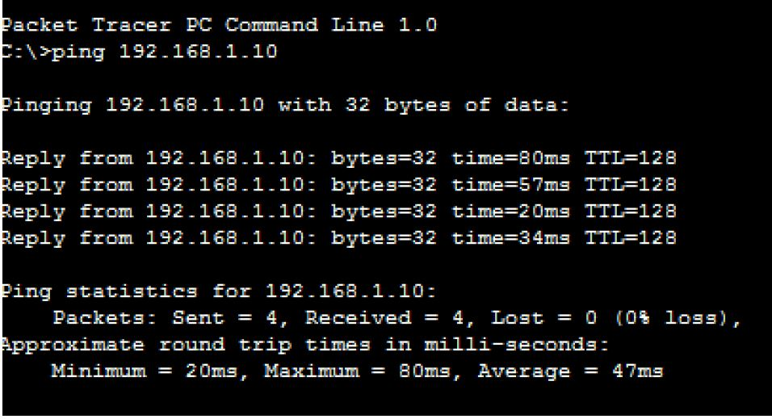

Wired and Wireless networks
Comparison of wired-wireless networks
Hetro and Homo networks
Homogeneous networks are networks where all the nodes have the same function in the network. One user is interchangeable with the next in the basic function they perform. In a landline telephone network, for example, each node (telephone) performs basically the same function as any other, and people tend to get telephones for the same reasons. Telecommunications networks, in general, are often homogeneous.
Heterogeneous networks are networks where there are two or more classes of nodes categorized by both function and utility. On the Honeybook market network, event planners behave differently than photographers, who behave differently from florists. Buyer nodes on eBay are on the network for fundamentally different reason from seller nodes.
Figure above shows transfer of packets
Unit 3 applications networks


